2. Mô hình OLS¶
2.1. Giới thiệu¶
Với mô hình hồi quy tuyến tính, ví dụ, tìm mối quan hệ giữa giá nhà và diện tích, ý tưởng để xây dựng mô hình là tìm một tổ hợp giữa \(\theta_0\) và \(\theta_1\) sao cho khoảng cách giữa mô hình tìm được và các quan sát là nhỏ nhất.
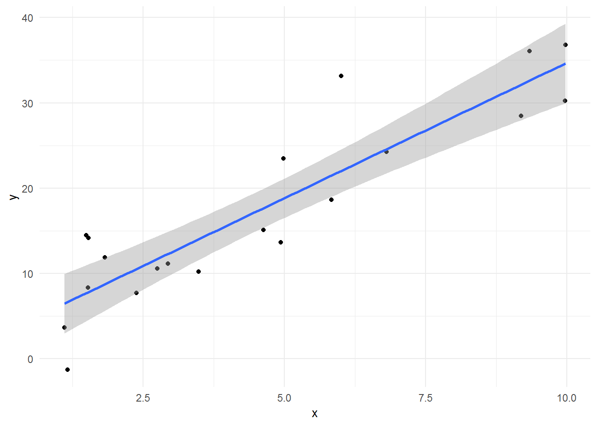
Để tìm ra được tổ hợp tham số \(\theta\), mục tiêu của thuật toán là tối ưu hóa tổng khoảng cách giữa các điểm dự báo và các điểm thực tế. Nói cách khác, ta cần tối ưu hàm sau.
Trong đó:
- \((i)\) là thứ tự các quan sát trong tập train
- \(m\) là số lượng quan sát
- \(h_\theta\) là mô hình ước lượng mối quan hệ giữa x và y
- \(y^{(i)}\) là quan sát thực tế của biến cần dự báo
- \(x^{(i)}\) là các quan sát thực tế của biến inputs
Trong thực tế, để dễ dàng hơn trong việc tính toán, ta sẽ tìm giá trị nhỏ nhất của trung bình của bình phương độ lêch. Ta sẽ thay đổi thành hàm sau.
\(J(\theta_0. \theta_1)\) được gọi là cost function. Về mặt bản
chất, cost function cho phép chúng ta biết được chất lượng của mô
hình so với thực tế. Thông thường, giá trị của hàm này cang thấp, chất
lượng mô hình càng tốt.
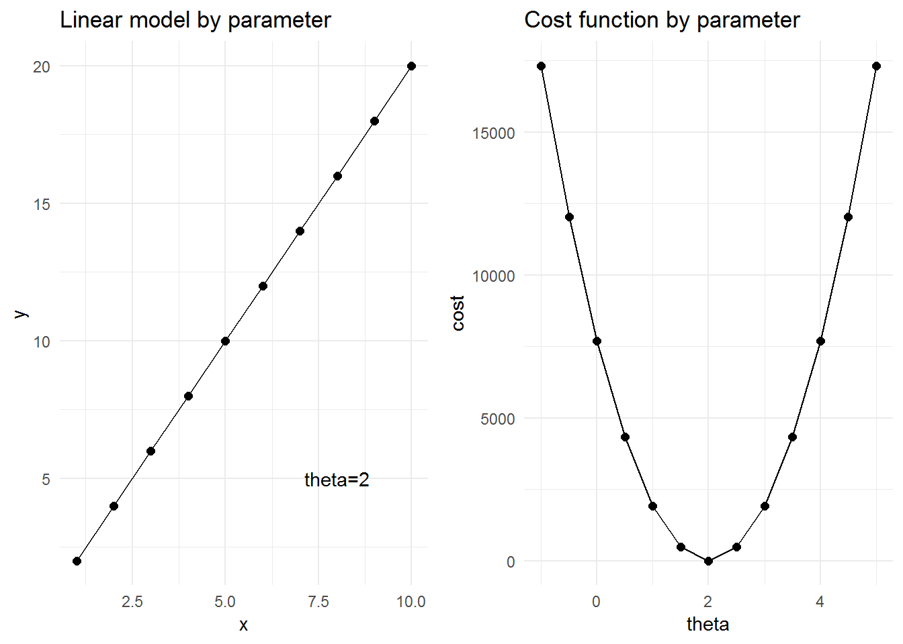
2.2. Xây dựng mô hình cơ bản¶
Để xây dựng mô hình, ta sử dụng tập dữ liệu phân tích về doanh số bán hàng với quảng cáo.
# Packages
library(tidyverse)
library(modelr)
library(broom)
library(ISLR)
# Load data (remove row numbers included as X1 variable)
#advertising <- read_csv("http://www-bcf.usc.edu/~gareth/ISL/Advertising.csv") %>%
# select(-X1) %>%
# rename_all(tolower)
advertising <- read_csv("data/Advertising.csv") %>%
select(-X1) %>%
rename_all(tolower)
advertising %>% head
## # A tibble: 6 x 4
## tv radio newspaper sales
## <dbl> <dbl> <dbl> <dbl>
## 1 230. 37.8 69.2 22.1
## 2 44.5 39.3 45.1 10.4
## 3 17.2 45.9 69.3 9.3
## 4 152. 41.3 58.5 18.5
## 5 181. 10.8 58.4 12.9
## 6 8.7 48.9 75 7.2
Trong tập dữ liệu trên, sales là doanh số bán hàng (ngàn sản phẩm),
các biến khác là chi tiêu marketing theo kênh (ngàn USD). Để xây dựng mô
hình, ta cũng chia dữ liệu thành hai phần: train và test.
set.seed(123)
train <- sample_frac(advertising,size = 0.6)
test <- advertising %>% anti_join(train)
Ta cũng có thể tạo train và test theo cách khác như sau
# Cách khác
train <- sample <- sample(c(TRUE, FALSE),
nrow(advertising),
replace = T, prob = c(0.6,0.4))
train <- advertising[sample, ]
test <- advertising[!sample, ]
2.2.1. Mô hình hồi quy đơn biến¶
Mô hình hồi quy đơn biến là mô hình chỉ có 1 biến X. Trong ví dụ này, ta sẽ xây dựng mô hình mối quan hệ giữa doanh số bán hàng và ngân sách được dành cho quảng cáo.
Trong đó:
- \(Y\) là biến sales
- \(X\) là biến TV advertising budget
- \(\beta_0\) là hệ số tự do (intercept)
- \(\beta_1\) là hệ số tương quan hay hệ số góc (độ dốc của đường hồi quy tuyến tính)
- \(\epsilon\) là sai số của mô hình - sai số này thường được giả định là có giá trị trung bình bằng 0 và tuân theo phân phối chuẩn.
Để xây dựng mô hình, ta thực hiện như sau.
model1 <- lm(sales ~ tv, data = train)
model1 %>% summary
##
## Call:
## lm(formula = sales ~ tv, data = train)
##
## Residuals:
## Min 1Q Median 3Q Max
## -8.0398 -2.0282 -0.1357 2.2867 7.4639
##
## Coefficients:
## Estimate Std. Error t value Pr(>|t|)
## (Intercept) 7.066290 0.626365 11.28 <2e-16 ***
## tv 0.046164 0.003588 12.87 <2e-16 ***
## ---
## Signif. codes: 0 '***' 0.001 '**' 0.01 '*' 0.05 '.' 0.1 ' ' 1
##
## Residual standard error: 3.331 on 118 degrees of freedom
## Multiple R-squared: 0.5838, Adjusted R-squared: 0.5803
## F-statistic: 165.5 on 1 and 118 DF, p-value: < 2.2e-16
train %>%
mutate(sale_fit = predict(model1, train)) %>%
sample_frac(0.4) %>%
ggplot(aes(tv, sales)) +
geom_point(alpha = 0.5, size = 2) +
geom_line(aes(x = tv, y = sale_fit), col = "darkred", size = 1) +
geom_segment(aes(x = tv, xend = tv, y = sales, yend = sale_fit)) +
theme_bw() +
labs(title = "Sales vs. TV marketing budget") +
theme(panel.border = element_blank(),
axis.line = element_line(colour = "black"))
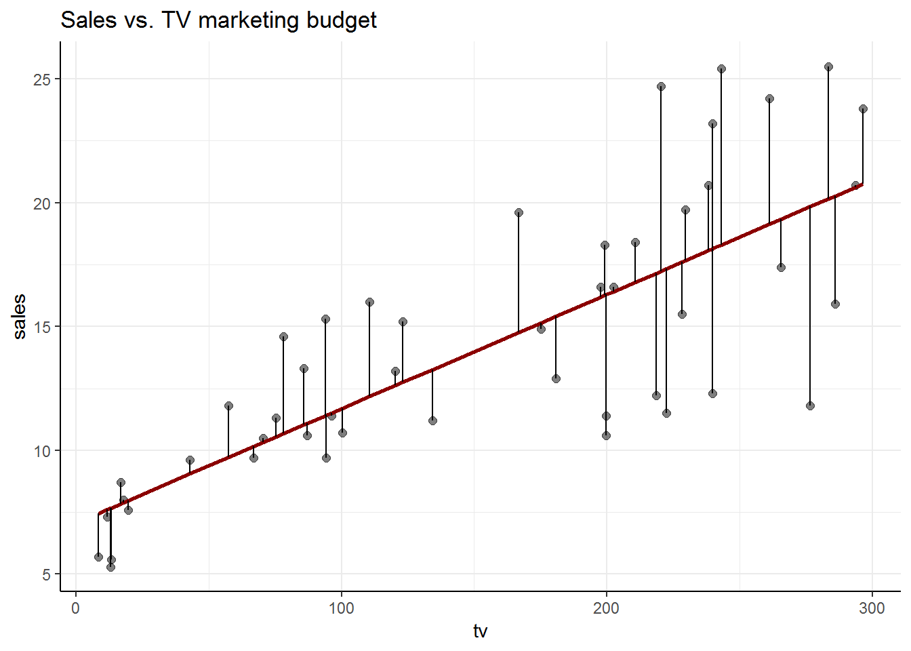
2.2.2. Diễn giải mô hình¶
result <- model1 %>% tidy
result
## # A tibble: 2 x 5
## term estimate std.error statistic p.value
## <chr> <dbl> <dbl> <dbl> <dbl>
## 1 (Intercept) 7.07 0.626 11.3 1.80e-20
## 2 tv 0.0462 0.00359 12.9 3.28e-24
Hàm tidy trong broom cho phép làm sạch kết quả mô hình hồi quy
và chuyển dữ liệu thành dạng bảng dataframe. Mối quan hệ giữa
sale và marketing được thể hiện như sau.
sales = 7.0662898 + 0.0461636 * tivi marketing budget
Như vậy, nếu marketing tăng 1 đơn vị (1000 USD), doanh số sẽ tăng 46.1636238 sản phẩm
Đánh giá mức độ ý nghĩa của hệ số góc
trong đó
.
Việc tính toán \(SE\) cho phép ta tính được mức độ tinh cậy 95% của hệ số \(\beta\) như sau.
Trong R, để tìm ra mức độ tin cậy 95% của hệ số \(\beta\), ta có thể làm như sau.
confint(model1)
## 2.5 % 97.5 %
## (Intercept) 5.82591632 8.30666330
## tv 0.03905843 0.05326882
Như vậy, ta thấy độ tin cậy 95% của hệ số \(\beta_1\) khác 0. Ta có
thể kiểm tra dựa trên p-value của mô hình đều nhỏ hơn 0.05
model1 %>% tidy
## # A tibble: 2 x 5
## term estimate std.error statistic p.value
## <chr> <dbl> <dbl> <dbl> <dbl>
## 1 (Intercept) 7.07 0.626 11.3 1.80e-20
## 2 tv 0.0462 0.00359 12.9 3.28e-24
2.3. Đánh giá chất lượng mô hình¶
Để đánh giá chất lượng mô hình, ta sẽ quan tâm đến 3 chỉ số sau:
- Sai số của mô hình
- R bình phương (\(R^2\))
- F-statistic
2.3.1. Sai số của mô hình¶
sigma(model1)
## [1] 3.331281
Với sai số như trên, ta có thể nói rằng, doanh số thực tế trên thị trường sẽ có sai số so với dự báo 1 khoảng 3.3. Sai số tương đối của mô hình so với thực tế sẽ là
sigma(model1)/mean(train$sales)
## [1] 0.2360657
Như vậy, sai số của mô hình so với thực tế sẽ là 23.6%.
2.3.2. R bình phương \(R^2\)¶
Chỉ số RSE cho ta biết được sai số của mô hình khi dự báo. Bên cạnh đó, 1 chỉ số thường xuyên được sử dụng là chỉ số \(R^2\). Chỉ số này đo lường tỷ lệ biến động của biến Y được dự báo qua việc sử dụng mô hình (proportion of variance explained). Nếu không sử dụng mô hình, ta có thể dự báo giá trị của Y bằng giá trị trung bình.
- Tổng bình phương các sai số giữa giá trị thực tế và giá trị trung bình được gọi là độ biến động của dữ liệu (TSS - Total Sum of Square)
- Tổng bình phương các sai số giữa giá trị dự báo và giá trị thực tế được gọi là sai số của mô hình (RSS - Residual Sum of Square)
- Tổng bình phương các sai số giữa giá trị dự báo và giá trị trung bình thực tế được gọi là tổng biến động được giải thích qua mô hình (ESS - Explained Sum of Square)
rsquare(model1, data = train)
## [1] 0.58383
Với kết quả trên, mô hình giải thích được 58.3829997% độ biến động của dữ liệu thực tế.

2.3.3. F statistic¶
Chỉ số thống kê F được tính như sau.
Chỉ số này được sử dụng để kiểm định các hệ số trong mô hình có thực sự khác 0.
\(H_0\): Tất cả các hệ số \(\beta\) trong mô hình đều bằng không \(H_1\): Có ít nhất một hệ số \(\beta\) trong mô hình khác không
Trong mô hình trên, giá trị p-value của F-statistic rất thấp, như
vậy, có ít nhất một hệ số trong mô hình khác không.
2.4. Dự báo¶
Để dự báo kết quả mô hình, ta có thể dùng hàm predict trong R như
sau.
# Model result
result <- test %>%
select(tv, sales) %>%
mutate(predict = predict(model1, test)) %>%
mutate(error = predict - sales)
sqrt(sum(result$error^2)/nrow(result))
## [1] 3.165155
# Cách hai
modelr::rmse(model1, test)
## [1] 3.165155
Vẽ kết quả mô hình với dự báo
result %>%
select(-error) %>%
rename(predicted_sales = predict,
real_sales = sales) %>%
gather(key = "type", value = "value", -tv) %>%
ggplot(aes(tv, value)) +
geom_point(aes(col = type), alpha = 0.5) +
geom_line(aes(col = type), alpha = 0.6) +
theme_bw() +
theme(legend.position = "top") +
labs(title = "Sales vs. TV marketing budget",
y = "Sales",
x = "TV budget") +
scale_color_manual(values = c("darkred", "darkblue")) +
theme(panel.border = element_blank(),
axis.line = element_line(colour = "black"))
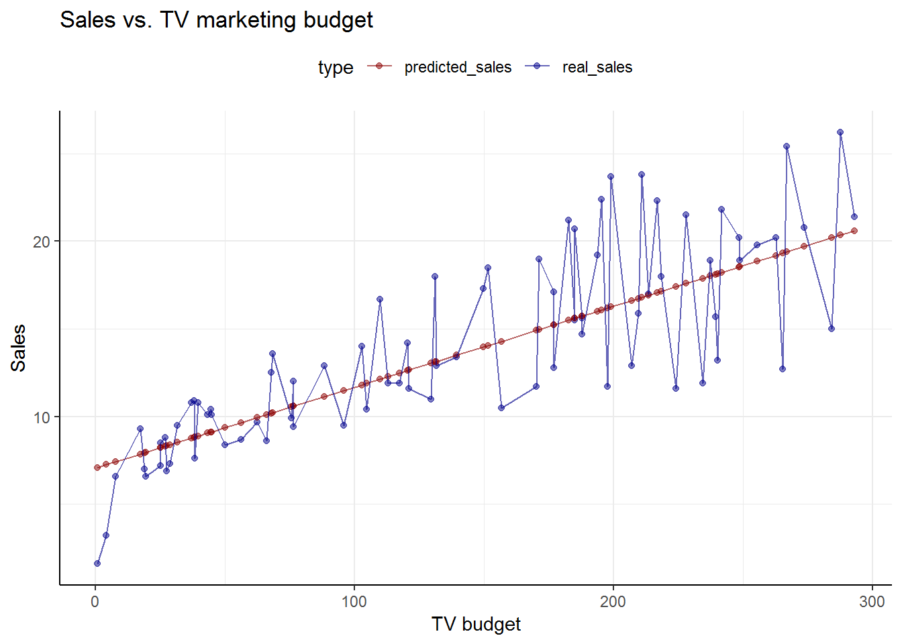
2.5. Thuật toán tối ưu với gradient decent¶
Ở phần trước, ta đã học cách áp dụng mô hình hồi quy đơn giản trong việc dự báo các biến liên tục. Ở phần này, ta sẽ tìm hiểu thêm về cách sử dụng học máy trong việc xây dựng mô hình hồi quy tuyến tính.
Việc ưu hóa hàm chi phí với các tham số khác nhau là vấn đề cốt lõi của
bất kỳ thuật toán machine learning nào. Tuy nhiên làm thế nào để tối ưu
được, ta cần phải áp dụng các thuật toán tối ưu. Trong đó, quan trọng và
phổ biến nhất là thuật toan gradient descent.
Để tối ưu hóa cost function, ta có thể thay đổi các tổ hợp giá trị của \(\theta\) cho đến khi tìm được tổ hợp mà tại đó, cost function đạt giá trị nhỏ nhất. Tuy nhiên, với trường hợp mô hình nhiều biến, ta sử dụng thuật toán gradient decient để tìm tập \(\theta\) mà tại đó, cost function đạt giá trị nhỏ nhất.
Quá trình sẽ diễn ra cho đến khi kết quả của cost function hội tụ tại 1 điểm với thuật toán sau.
Trong đó:
- \(\alpha\) được gọi là
learning rate, cho phép kiểm soát tốc độ update tham số trong mô hình. :=là dấu gán- \(\frac{d}{d\theta_j}J(\theta_0, \theta_1)\) là đạo hàm riêng phần theo \(\theta\) của hàm \(cost function\)
Áp dụng công thức tính đạo hàm hàm hợp, ta được
Thuật toán trên còn được gọi là batch gradient bởi lẽ thuật toán trên
tính toán đến toàn bộ quan sát trên tập dữ liệu huấn luyện (train data).
Bên cạnh batch gradient, còn có stochastic gradient descent và
mini batch gradient descent.
Công thức tổng quát để update tham số trong mô hình machine learning như sau.
Trong đó:
- \(\Theta^1\): Giá trị tham số mới
- \(\Theta^0\): Giá trị tham số hiện tại
- \(\alpha\): Learning rate, tốc độc update tham số
- \(\nabla J(\Theta)\): Đạo hàm riêng phần của từng tham số theo giá trị của biến đầu vào.
- \(-\): Hướng update tham số. Nếu giá trị đạo hàm riêng phần là dương, ta cần giảm giá trị của tham số, nếu giá trị đạo hàm riêng phần là âm, ta cần tăng giá trị của tham số.
Giải thích gradient descent bằng ngôn ngữ đơn giản:
Thuật toán gradient descent trông thì phức tạp, nhưng thực tế, cách
triển khai và tối ưu thuật toán khá giống với phương pháp agile
trong phát triển phần mềm. Thuật toán có thể được mô tả đơn giản lại như
sau.
- Xây dựng mô hình một cách nhanh chóng (build). Tại bước này, ta chọn ngẫu nhiên giá trị của tham số để có thể xây dựng mô hình một cách đơn giản nhất.
- Đo lường độ lệch của mô hình so với thực tế (measure). Tại bước này, ta tính toán sai số giữa mô hình vừa xây dựng và dữ liệu thực tế để đo lường sai số của mô hình.
- Thay đổi/update mô hình dựa trên feedback (learn/action). Bước này sẽ
phức tạp hơn một chút do ta phải trả lời hai câu hỏi:
- Tham số cần được thay đổi theo hướng nào? Tăng giá trị lên hay giảm giá trị xuống?
- Tốc độ thay đổi là bao nhiêu.
Với câu hỏi thứ nhất, ta cần tính được giá trị đạo hàm riêng phần của từng tham số tại giá trị của X. Nếu giá trị này dương, ta cần giảm giá trị của tham số và ngược lại
Với câu hỏi thứ hai, ta phải đặt trước một giá trị quy định tốc độ thay
đổi của tham số. Giá trị này được gọi là learning rate.
Mô hình hồi quy.
library(dplyr)
library(ggplot2)
n <- 200 # số lượng quan sát
bias <- 4
slope <- 3.5
dot <- `%*%` # Hàm tính phép nhân ma trận
x <- rnorm(n) * 2
x_b <- cbind(x, rep(1, n)) # Thêm hệ số beta_0 cho ma trận x
y <- bias + slope * x + rnorm(n)
df <- data_frame(x = x, y = y)
df %>%
ggplot(aes(x,y)) +
geom_point(alpha = 0.5) +
theme_minimal()
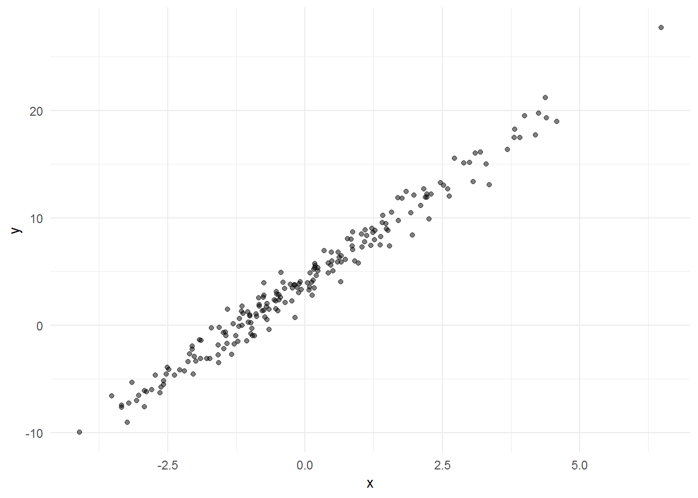
learning_rate <- 0.05
n_iterations <- 100
theta <- matrix(c(20, 20)) # Giá trị tham số đầu tiên
b0 <- vector("numeric", length = n_iterations)
b1 <- vector("numeric", length = n_iterations)
sse_i <- vector("numeric", length = n_iterations)
for (iteration in seq_len(n_iterations)) {
# Mô hình dự báo với theta
yhat <- dot(x_b, theta)
# Tính sai só của mô hình
residuals_b <- yhat - y
# Tính gradient (đạo hàm riêng phần cho giá trị theta)
gradients <- 2/n * dot(t(x_b), residuals_b) # Lưu ý
theta <- theta - learning_rate * gradients # update theta
sse_i[[iteration]] <- sum((y - dot(x_b, theta))**2)
b0[[iteration]] <- theta[2]
b1[[iteration]] <- theta[1]
}
model_i <- data.frame(model_iter = 1:n_iterations,
sse = sse_i,
b0 = b0,
b1 = b1)
Lưu ý: Với mô hình hồi quy, hàm chi phí (cost function) là MSE.
Do đó, ta có thể khái quát hóa gradient cho hai tham số như sau.
Trong đó, X’ là [1, X]
p1 <- df %>%
ggplot(aes(x=x, y=y)) +
geom_abline(aes(intercept = b0,
slope = b1,
colour = -sse),
data = model_i,
alpha = .50
) +
geom_point(alpha = 0.4) +
geom_abline(aes(intercept = b0,
slope = b1),
data = model_i[100, ],
alpha = 0.5,
size = 2,
colour = "dodger blue") +
geom_abline(aes(intercept = b0,
slope = b1),
data = model_i[1, ],
colour = "red",
alpha = 0.5,
size = 2) +
scale_color_continuous(low = "red", high = "grey") +
guides(colour = FALSE) +
theme_minimal()
p1
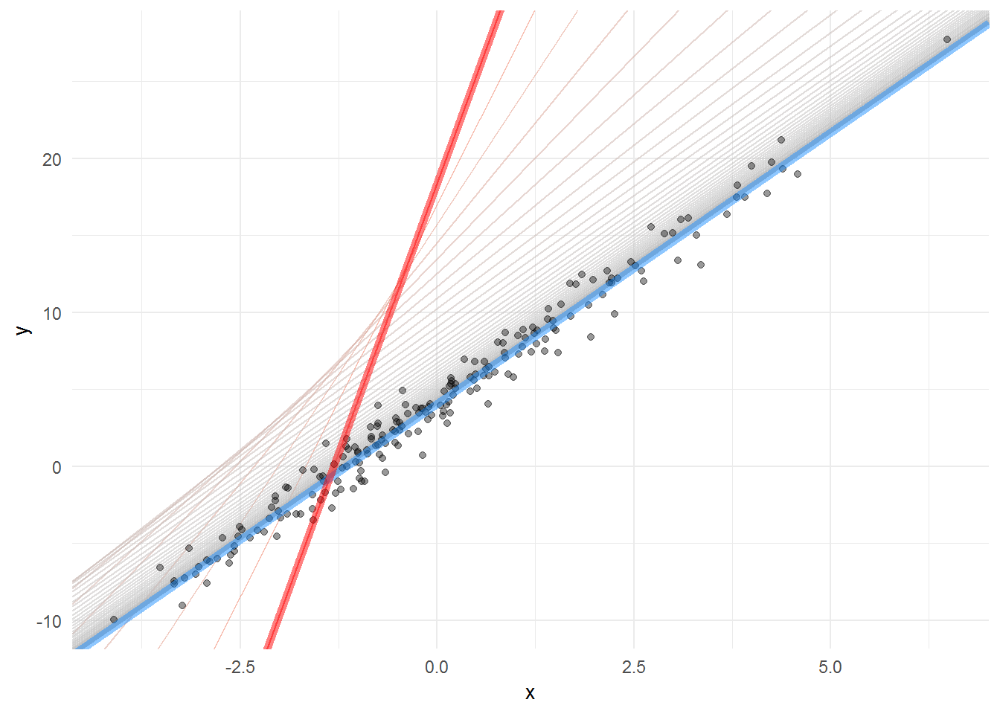
p2 <- model_i[1:30,] %>%
ggplot(aes(model_iter, sse, colour = -sse)) +
geom_point(alpha = 0.4) +
theme_minimal() +
labs(x = "Model iteration",
y = "Sum of Sqaured errors") +
scale_color_continuous(low = "red", high = "dodger blue") +
guides(colour = FALSE)
p2
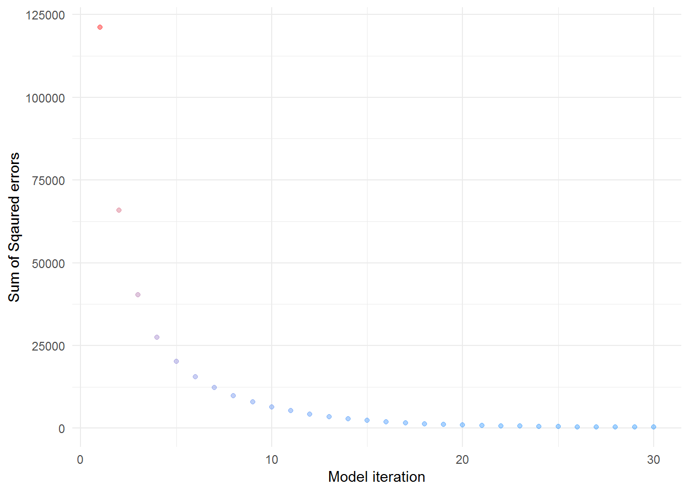
2.6. Test các kiểm định trong mô hình¶
Với cách tiếp cận của kinh tế lượng, mô hình OLS cần phải đảm bảo 4
giả định.
- Phương sai của
sai sốkhông đổi theo thời gian - Sai số có phân phối chuẩn
- Sai số không có tự tương quan (auto correlation)
- Không có hiện tượng đa cộng tuyến
2.6.1. Heteroskedaticity¶
- Định nghĩa: Phương sai của residuals là ổn định
- Test Goldfeld-Quandt:
- Ho: Phương sai ổn định
- H1: Phương sai không ổn định
- Cách thực hiện:
- Chia residuals thành 2 phần ngẫu nhiên
- Kiểm tra phương sai giữa 2 residuals
- Thực hiện test so sánh phương sai
require(lmtest)
x <- rep(c(-1,1), 50)
err1 <- c(rnorm(50, sd=1), rnorm(50, sd=2)) # heteroskedastycznosc
err2 <- rnorm(100) # homoskedastycznosc
y1 <- 1 + x + err1
y2 <- 1 + x + err2
gqtest(y1 ~ x);
##
## Goldfeld-Quandt test
##
## data: y1 ~ x
## GQ = 5.1762, df1 = 48, df2 = 48, p-value = 3.542e-08
## alternative hypothesis: variance increases from segment 1 to 2
# Loại bỏ Ho, residuals có phương sai ko ổn đinh
gqtest(y2 ~ x);
##
## Goldfeld-Quandt test
##
## data: y2 ~ x
## GQ = 0.75317, df1 = 48, df2 = 48, p-value = 0.8353
## alternative hypothesis: variance increases from segment 1 to 2
# Giữ Ho, mô hình có phương sai của residual ổn định
- Ví dụ 2:
require(lmtest);
n <- 10^3;
x <- sort(runif(n, -2, 2));
err <- rnorm(n, 0, 1);
y1 <- 1 + x + x*err; # Heteroskedaticity
y2 <- 1 + x + err; # Homoskedaticity
par(mfrow=c(2,1));
plot(x, y1, pch=20, col="gray");
model1 <- lm(y1 ~ x);
abline(model1);
plot(x, y2, pch=20, col="gray");
model2 <- lm(y2 ~ x);
abline(model2);
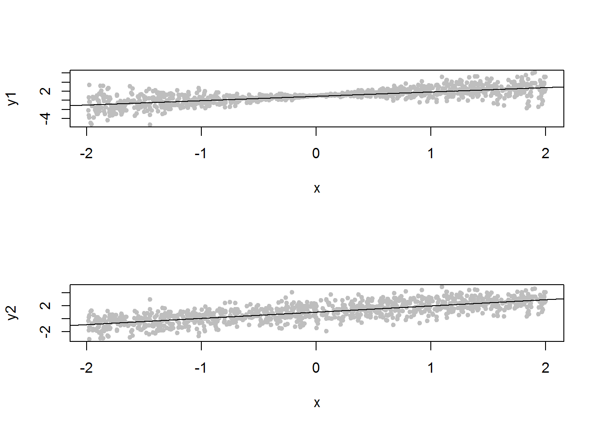
gqtest(y1 ~ x); # Heteroskedaticity
##
## Goldfeld-Quandt test
##
## data: y1 ~ x
## GQ = 0.91922, df1 = 498, df2 = 498, p-value = 0.8262
## alternative hypothesis: variance increases from segment 1 to 2
gqtest(y2 ~ x); # Homoskedaticity
##
## Goldfeld-Quandt test
##
## data: y2 ~ x
## GQ = 1.0199, df1 = 498, df2 = 498, p-value = 0.4131
## alternative hypothesis: variance increases from segment 1 to 2
2.6.2. Phân phối chuẩn của phần dư¶
- Test Shapiro:
- Ho: Residuals có phân phối chuẩn
- H1: Không có phân phối chuẩn
require(lmtest);
shapiro.test(rnorm(1000, mean = 5, sd = 3))
##
## Shapiro-Wilk normality test
##
## data: rnorm(1000, mean = 5, sd = 3)
## W = 0.99906, p-value = 0.9022
shapiro.test(runif(1000, min = 2, max = 4))
##
## Shapiro-Wilk normality test
##
## data: runif(1000, min = 2, max = 4)
## W = 0.95637, p-value < 2.2e-16
shapiro.test(residuals(model1))
##
## Shapiro-Wilk normality test
##
## data: residuals(model1)
## W = 0.96341, p-value = 3.829e-15
par(mfrow = c(1,1))
hist(residuals(model1))
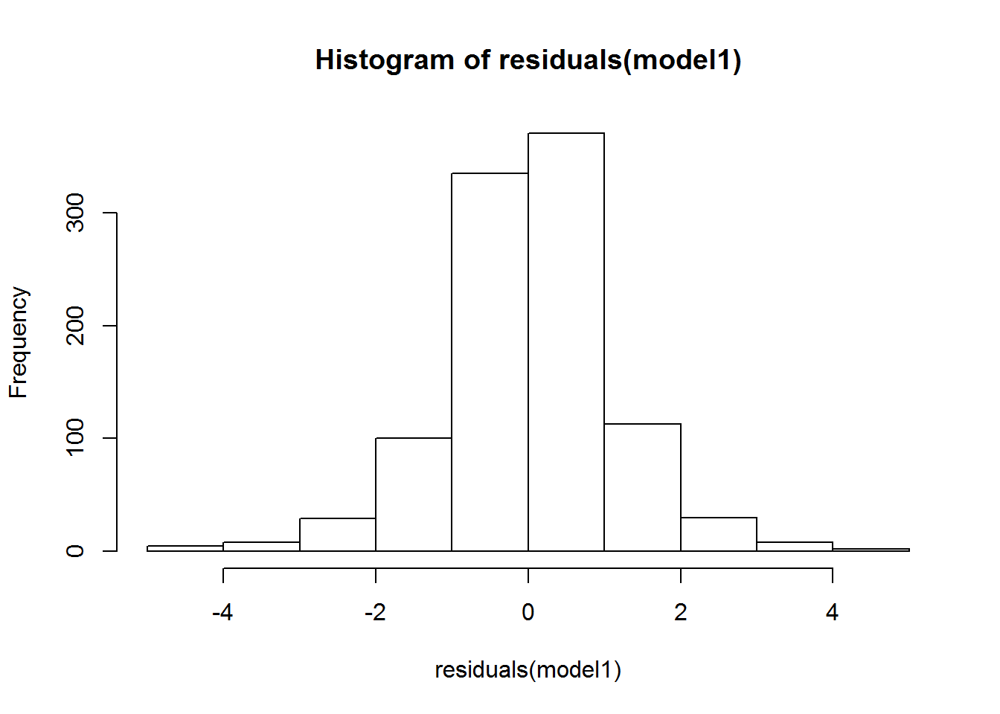
#Kiểm tra đồ thị
qqnorm(residuals(model1), col = "blue")
qqline(residuals(model1), col = "red")
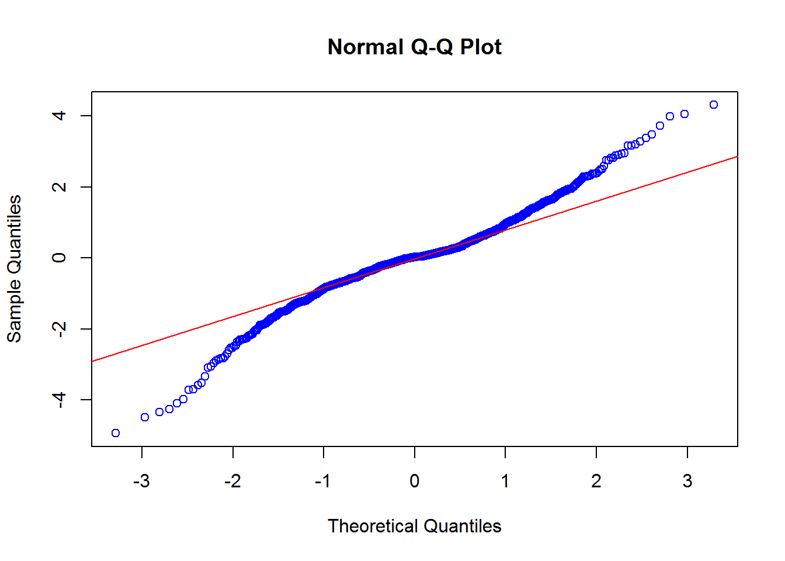
- Test Jaque-Bera
- Ho: Phân phối chuẩn
- H1: Không có phân phối chuẩn
require(tseries);
x <- rnorm(100) # H0
jarque.bera.test(x)
##
## Jarque Bera Test
##
## data: x
## X-squared = 0.55985, df = 2, p-value = 0.7558
x <- runif(100) # Ha
jarque.bera.test(x)
##
## Jarque Bera Test
##
## data: x
## X-squared = 4.1712, df = 2, p-value = 0.1242
2.6.3. Auto correlation của residuals¶
- Test Dublin Watson
- Ho: Giá trị auto correlation = 0
- H1: rho khác 0
library(stats)
err1 <- rnorm(100) # Nhiễu trắng (white error)
err2 <- stats::filter(err1, 0.7, method="recursive")
# AR với rho = 0.7
x <- runif(100, 0, 1)
y1 <- 1 + x + err1
y2 <- 1 + x + err2
dwtest(y1 ~ x)
##
## Durbin-Watson test
##
## data: y1 ~ x
## DW = 2.1752, p-value = 0.8143
## alternative hypothesis: true autocorrelation is greater than 0
dwtest(y2 ~ x)
##
## Durbin-Watson test
##
## data: y2 ~ x
## DW = 0.60602, p-value = 9.945e-13
## alternative hypothesis: true autocorrelation is greater than 0
- Test Breusch - Godfrey
err1 <- rnorm(100) # bialy szum
err2 <- stats::filter(err1, 0.7, method="recursive") # model AR(1) z parametrem 0.7
x <- runif(100, 0, 1)
y1 <- 1 + x + err1
y2 <- 1 + x + err2
bgtest(y1 ~ x, order=2);
##
## Breusch-Godfrey test for serial correlation of order up to 2
##
## data: y1 ~ x
## LM test = 1.2403, df = 2, p-value = 0.5379
bgtest(y2 ~ x, order=2);
##
## Breusch-Godfrey test for serial correlation of order up to 2
##
## data: y2 ~ x
## LM test = 37.144, df = 2, p-value = 8.594e-09
2.6.4. Multi-collinearity¶
Hiện tượng đa cộng tuyến xảy ra khi các biến độc lập có tương quan với nhau.
library(car)
x <- rnorm(100,1,1)
y <- 3*x + rnorm(100,0,1)
z <- x + 2*y + rnorm(100,1,2)
model1 <- lm(z ~ x + y)
summary(model1)
##
## Call:
## lm(formula = z ~ x + y)
##
## Residuals:
## Min 1Q Median 3Q Max
## -5.6091 -1.3664 -0.3104 1.1324 7.0898
##
## Coefficients:
## Estimate Std. Error t value Pr(>|t|)
## (Intercept) 0.8379 0.3370 2.486 0.0146 *
## x 1.1974 0.6100 1.963 0.0525 .
## y 2.0699 0.2061 10.041 <2e-16 ***
## ---
## Signif. codes: 0 '***' 0.001 '**' 0.01 '*' 0.05 '.' 0.1 ' ' 1
##
## Residual standard error: 2.114 on 97 degrees of freedom
## Multiple R-squared: 0.8815, Adjusted R-squared: 0.879
## F-statistic: 360.7 on 2 and 97 DF, p-value: < 2.2e-16
#Kiểm tra
fit <- lm(mpg~disp+hp+wt+drat, data=mtcars)
vif(model1) # variance inflation factors
## x y
## 5.149855 5.149855
sqrt(vif(model1))
## x y
## 2.269329 2.269329
Nếu SQL của VIF > 2, khả năng có multi-collinearity là rất cao. Khi
có đa cộng tuyến, ta có thể bỏ biến xảy ra hiện tượng trên hoặc sử dụng
Ridge regression.
2.7. Các quan sát ngoại lai¶
Có 3 loại quan sát ngoại lai:
- Outliers (discrepancy): Y nằm ngoài giá trị thông thường
- Leverage: X có giá trị khác thường
- Influentual observation: Bao gồm cả quan sát của Y và X.
Xem phân biệt 3 loại trong bảng dưới đây
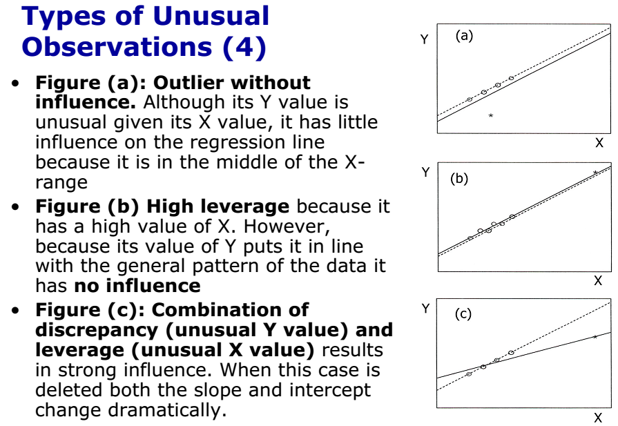
2.7.1. Outliers¶
Outliers là các quan sát không được dự báo tốt trong mô hình. Các quan sát này có thể thấy rõ trên đường Q-Q plot
library(car)
states <- as.data.frame(
state.x77[,c("Murder", "Population",
"Illiteracy", "Income", "Frost")])
fit <- lm(Murder ~
Population + Illiteracy + Income + Frost,
data=states)
qqPlot(fit,
labels=row.names(states),
id.method="identify",
simulate=TRUE,
main="Q-Q Plot")
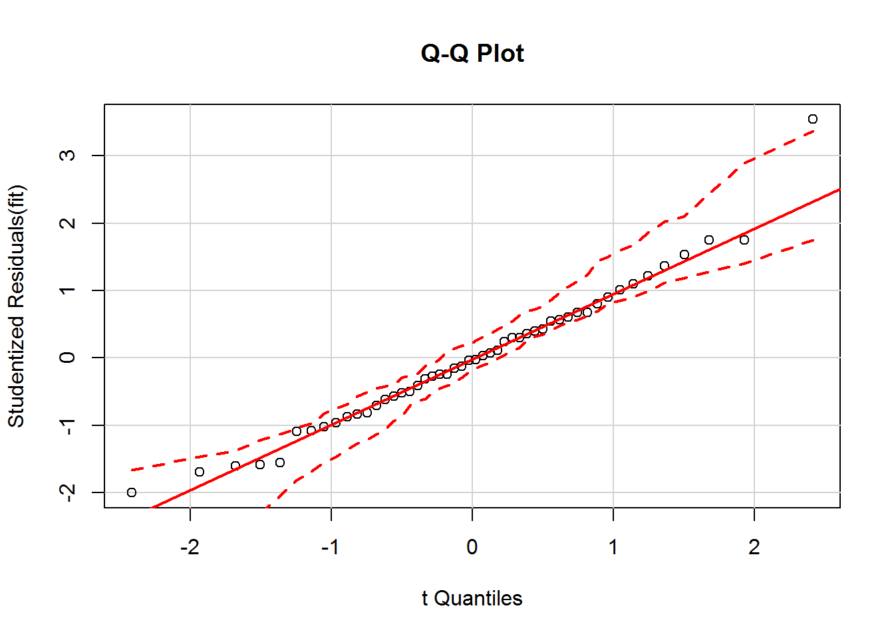
outlier.test(fit)
## rstudent unadjusted p-value Bonferonni p
## Nevada 3.542929 0.00095088 0.047544
Kiểm định outliers test:
- \(H_0\): Quan sát là quan sát thông thường
- \(H_1\): Quan sát là outliers
2.7.2. High-leverage points¶
Các quan sát được cho là có leverage cao được tính theo hat-statistics. Giá trị trung bình của chỉ số này là p/n. Nếu các quan sát có hat cao hơn 2 lần giá trị trung bình thì cần phải được xem xét kỹ.
hat.plot <- function(fit) {
p <- length(coefficients(fit))
n <- length(fitted(fit))
plot(hatvalues(fit), main = "Index Plot of Hat Values")
abline(h = c(2, 3) * p / n,
col = "red",
lty = 2)
identify(1:n, hatvalues(fit), names(hatvalues(fit)))
}
states <- as.data.frame(
state.x77[, c("Murder", "Population",
"Illiteracy", "Income", "Frost")])
fit <- lm(Murder ~
Population + Illiteracy + Income + Frost,
data=states)
hat.plot(fit)
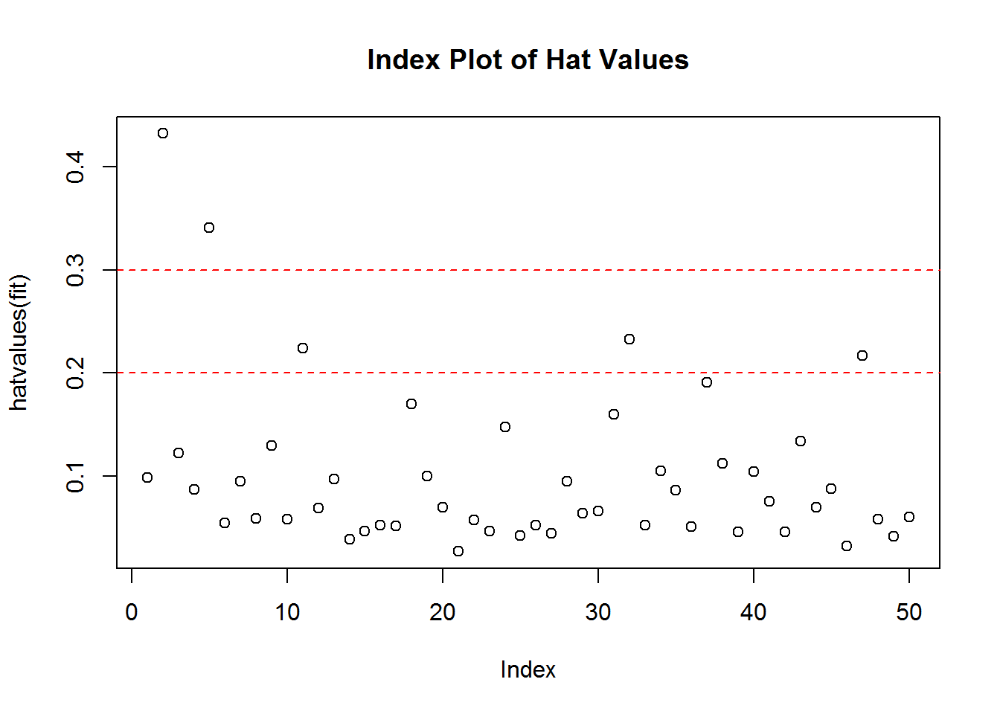
## integer(0)
2.7.3. Influential observations¶
Các quan sát có ảnh hưởng mạnh đến mô hình là các quan sát mà khi ta loại bỏ quan sát đó ra, sẽ thay đổi mô hình.
Cook-distance lớn hơn \(\frac{4}{n-k-1}\) được gọi là các quan sát có ảnh hưởng
cutoff <- 4/(nrow(states)-length(fit$coefficients)-2)
plot(fit, which = 4, cook.levels = cutoff)
abline(h = cutoff, col = "red")
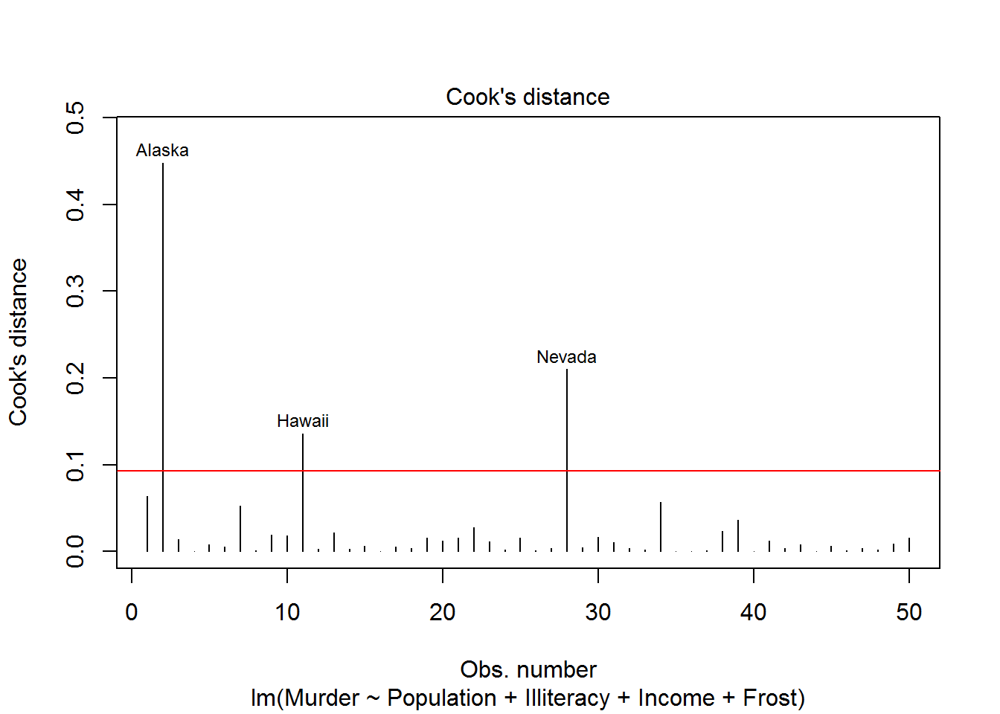
Tuy nhiên, cách tiếp cận trên không chỉ cho ta biết chính xác các quan sát đó ảnh hưởng đến mô hình như thế nào.
library(car)
avPlots(fit, ask = F, id.method = "identity")
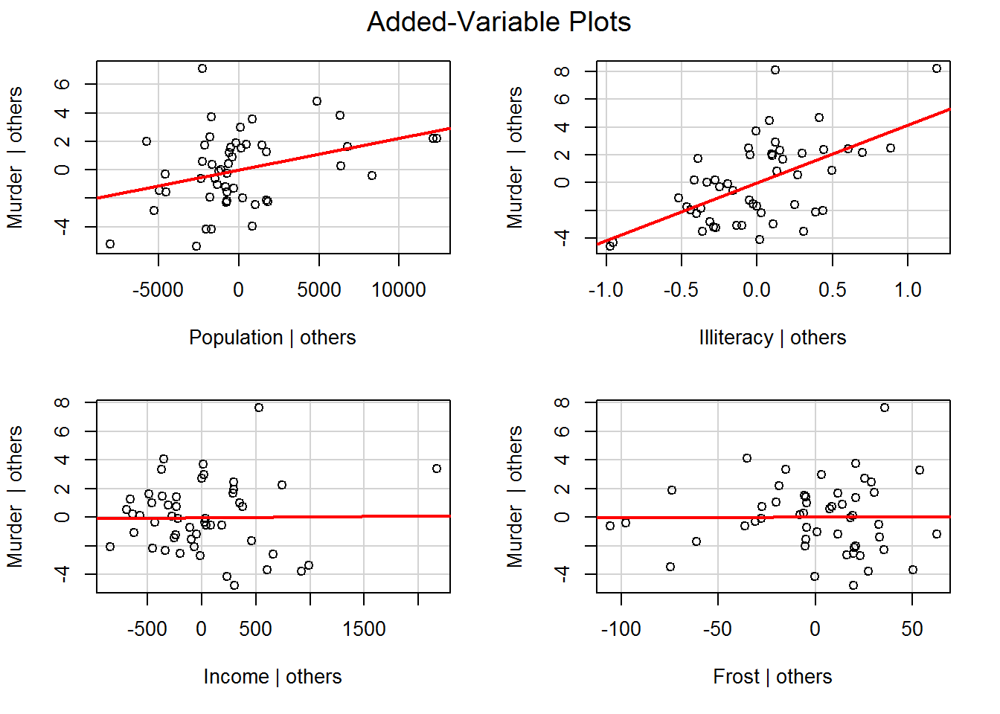
influencePlot(fit, id.method ="identity")
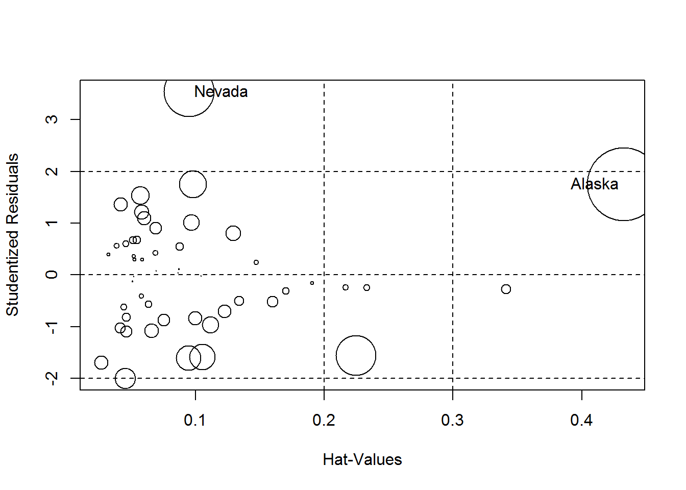
## StudRes Hat CookD
## Alaska 1.753692 0.43247319 0.4480510
## Nevada 3.542929 0.09508977 0.2099157